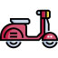

Top 5 de ce qu'il faut absolument voir à Rome !
Colisée - Forum Romain et Palatin
A partir de 18 euros.
Les gladiateurs étaient des criminels, des prisonniers de guerre et des esclaves entraînés à combattre dans les écoles professionnelles. Ils sont devenus si populaires que certains hommes ont choisi de se porter volontaires pour devenir gladiateurs. Les gladiateurs entraînés combattaient des criminels et des esclaves non préparés sous forme d’une exécution publique, car gagner un combat contre un gladiateur permettait à un esclave de retrouver sa liberté.
Les vestiges archéologiques montrent que les gladiateurs étaient souvent en surpoids, peut-être dans le but de se construire une couche protectrice de graisse. Ils avaient plutôt tendance à manger végétarien; des légumes frais, des fruits secs, de l'orge et des haricots pour avoir des os solides qui guérissent rapidement.

Fontaine de Trevi
Gratuit.
La fontaine de Trevi (fontana di Trevi) est la plus grande et une des plus célèbres fontaines de Rome. Réalisée entre 1732 et 1762, elle est située dans le rione de Trevi, sur la Piazza di Trevi, et est adossée au palais Poli.
Musée du Vatican et Chapelle Sixitine
A partir de 28 euros.
Les Musées du Vatican constituent un ensemble muséal situé au Vatican. Il regroupe douze musées, ce qui représente cinq galeries et 1 400 salles. L'ensemble abrite l'une des plus grandes collections d'art dans le monde, car il expose la vaste collection d'œuvres d'art, notamment peintures et sculptures, rassemblées au fil des siècles par les papes, surtout à l'époque des États pontificaux (jusqu'en 1870), et par la suite l'institution même des Musées du Vatican.. Les musées sont en partie hébergés dans le Palais du Vatican.
La chapelle Sixtine, appelée originellement chapelle de Sixte est l'une des salles des palais pontificaux du Vatican. À l'heure actuelle, elle fait partie des musées du Vatican. C'est dans la chapelle Sixtine que, traditionnellement depuis le XVe siècle, les cardinaux réunis en conclave élisent le nouveau pape (des conclaves s'étant tenus également dans la Cappella Parva et le palais du Quirinal), et obligatoirement depuis la constitution apostolique Universi Dominici Gregis édictée par Jean-Paul II en 19961.
Basilique Saint Pierre
A partir de 19,50.
La basilique Saint-Pierre du Vatican (en latin : Sancti Petri et en italien : San Pietro in Vaticano) est le plus important édifice religieux du catholicisme. Elle est située au Vatican, sur la rive droite du Tibre, et sa façade s'ouvre sur la place Saint-Pierre.
Elle a été construite là où, sous la volonté de l'empereur Constantin, les premiers pèlerins venaient rendre un culte à saint Pierre à l'emplacement du cirque de Caligula et de Néron.
Inscrite sur la liste du patrimoine mondial, établie par l'UNESCO, la basilique Saint-Pierre est considérée comme la plus grande conception architecturale de son temps et demeure l'un des monuments les plus visités au monde. Sa construction, à l'emplacement de l'ancienne basilique construite sous l'empereur Constantin, commence le 18 avril 1506 et est achevée en 1626. Ses architectes les plus importants sont Bramante, Michel-Ange, Maderno et Le Berni
Restaurants
Borghiciana Pastifico Artigianale (cuisine locale).
Fourchette de prix : 10 - 25 euros.
Adresse : Borgo Pio 186 A 20 Mt. Da Via Della
Conciliazione, 00193 Rome
Pantha Rei (spécialité de Rome).
Fourchette de prix : 10 - 40 euros.
Adresse : Via della Minerva 19 adiacente alla Guardia d'Onore del Pantheon, 00186 Rome
Un point météo